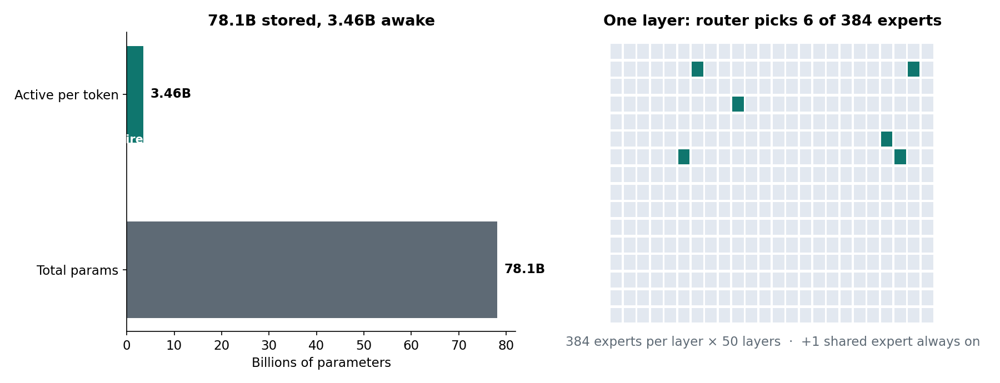
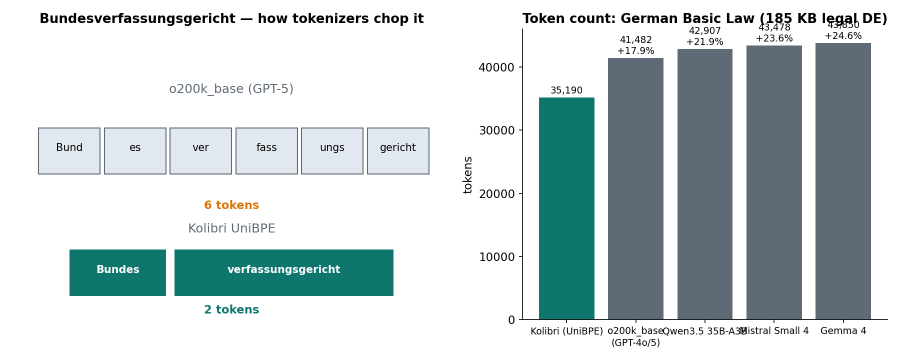
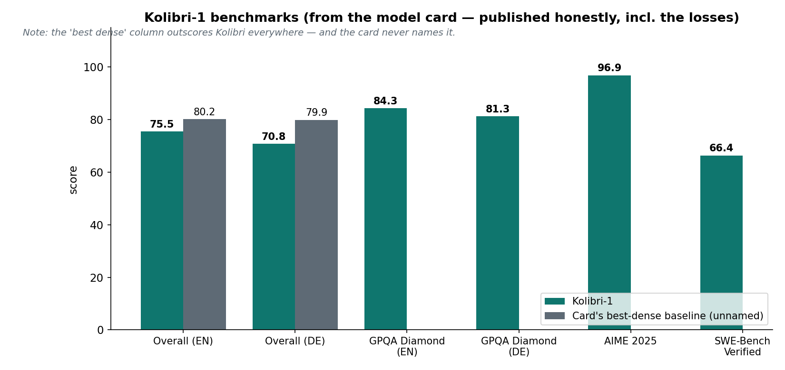
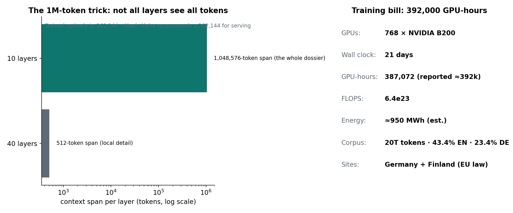

One-line: On German Unity Day, Aleph Alpha open-sourced Kolibri-1 — a 78.1B-parameter MoE that only wakes 3.46B per token, with a German-native tokenizer, Apache 2.0 weights, and a training pipeline built to satisfy the EU AI Act.
On October 3 — Germany's Day of German Unity — Aleph Alpha put the full weights of Kolibri-1 on Hugging Face under Apache 2.0. No API. No waitlist. Download, run, modify.
The numbers: 78.1 billion total parameters, 3.46 billion active per token — 4.4%. A router sends each token to 6 of 384 experts in each of 50 layers, plus one shared expert that sees everything. Context runs to 1,048,576 tokens. Training took 768 NVIDIA B200s, 21 days — roughly 392,000 GPU-hours and 6.4e23 FLOPS — on infrastructure in Germany and Finland, under European and German law.
Aleph Alpha is Europe's other champion AI lab (with Mistral), ~200 people, founded 2019. This is their answer to a question governments keep asking: can we have a frontier-class model that never leaves our legal jurisdiction?

78.1B total, 3.46B active per token (4.4%). The router picks 6 of 384 experts per layer — 1.56% — across 50 layers, plus one always-on shared expert.
ELI5: the hospital of 384 specialists
Imagine a hospital with 384 specialists — but for every patient, a triage nurse picks exactly 6. The cardiology patient never wakes the podiatrist. That's Kolibri's Mixture-of-Experts: the knowledge of 78 billion parameters, the compute bill of 3.5 billion.
The catch is the parking lot. All 384 specialists are on staff whether they see patients or not — the FP8 checkpoint is ~78 GB. Kolibri computes like a 3.5B model but needs the memory of a 78B one. Minimum config: two 80GB A100s, two H100s, one H200, or a single B200/B300. This is datacenter hardware, not your laptop — "open weights" and "runs anywhere" are different claims.
One Hacker News commenter who ran it on a single RTX Pro 6000 in FP8 measured ~170 tokens/second — the small active count paying off directly in serving speed.
How it works: routing + a tokenizer that reads German
1. The router: 6 of 384, 50 times per token
Every token passes through 50 layers. In each layer, a learned router scores 384 experts and forwards the token to the top 6. A shared expert processes every token regardless — think of it as the generalist on call who absorbs common patterns so the routed experts can stay specialized. The router is the mechanism covered in our Sep 26 MoE post: it learns which knowledge the token needs, not the knowledge itself.
The active-parameter math matters for serving cost: at the same output budget, per-token FLOPs track active parameters, not total. ~3.46B active means decode behaves like a small model — hence the 170 tok/s figure.
2. UniBPE: the tokenizer that respects German morphology
German glues words together. Bundesverfassungsgericht (Federal Constitutional Court) is one word. A tokenizer trained mostly on English — like GPT-5's o200k_base — chops it into 6 fragments: Bund|es|ver|fass|ungs|gericht. Kolibri's tokenizer splits it into 2: Bundes|verfassungsgericht.
Aleph Alpha built UniBPE for this: it keeps BPE's bottom-up merging but scores each merge with the Unigram objective, which respects how German builds compounds. The 128k-vocabulary tokenizer needs 11.2% fewer tokens for German text than GPT-5's tokenizer — the best of 10 they measured — and an independent check by a third party ran 6 tokenizers over the full German Basic Law (185 KB of legal German): Kolibri needed 35,190 tokens; GPT-5's tokenizer needed 41,482 (+17.9%).

Left: "Bundesverfassungsgericht" as 6 fragments (o200k_base) vs 2 (Kolibri UniBPE). Right: token counts on the 185 KB German Basic Law — Kolibri needs 15–24% fewer tokens than the others.
Why it matters beyond efficiency: fewer tokens per German word means more German fits in the same context window, and every token is a forward pass. Tokenizer efficiency is a direct serving-cost discount on every German document.
3. The 1M-token trick: not all layers see everything
The 1,048,576-token context has an asterisk — a clever engineering one. Only 10 of the 50 layers process the full context; the other 40 use a 512-token span. Long-range structure gets captured where it matters; local detail stays local. The model trained natively to 262,144 tokens, and Aleph Alpha recommends staying at or under 262k for serving efficiency.
4. Built for regulated work, not just benchmarks
- RAG with abstention: on supplied documents, Kolibri answers from the evidence and declines when the evidence is insufficient — hallucination reduction by design.
- Four reasoning-effort levels (none/low/medium/high): the reasoning-depth vs speed dial, per request.
- Compliance pipeline: 4.5M-URL blocklist, every third-party dataset individually checked for license terms and opt-outs, personal data redacted pre-training, technical report documenting EU AI Act / GDPR / copyright handling. Aleph Alpha signed the EU General-Purpose AI Code of Practice.
For experts: benchmarks, compute, and honest limitations

GPQA Diamond 84.3 (EN) / 81.3 (DE), AIME 2025 96.9, SWE-Bench Verified 66.4. The card's "best dense" column wins everywhere — and is never named.
The model card is unusually honest. Overall: 75.5 (EN) and 70.8 (DE) vs the card's own unnamed best-dense baseline at 80.2 / 79.9. Kolibri loses to its own comparison column on every aggregate. It wins the quality-per-active-parameter curve against other MoE models in its band, not the absolute frontier.
Other numbers worth knowing:
- Training corpus: 20 trillion tokens — 43.4% English, 23.4% German. The card's philosophy: "depth over breadth — two languages excellently rather than many languages adequately."
- RULER at 1M context: 63.2% — vs a 73.1% baseline that only runs at 512k. Nobody else is scoring 1M-context retrieval at all.
- Compute: 768 B200 × 21 days ≈ 392,000 GPU-hours (incl. mid-training + context extension), 6.4e23 FLOPS, ~950 MWh estimated. For reference, that's roughly $2–3M of B200 rental.
- Distillation sources: English data re-phrased from Google's Gemma 4, German from Mistral-NeMo, quality labels from Qwen3-32B — with bias filters, though the card concedes an inheritance problem: training data included material from Chinese-language models with known political bias, "actively reduced through data filtering and dedicated alignment training."
- Validates small first: a 30B-total / 3B-active sibling ("Kolibri Origin") ran the pipeline before the ~3-month scale-up to the full model.
Where it sits in the open-weights landscape: Reflection AI is reportedly releasing an open-weight system in October 2026 too (Nvidia-backed, $7B+ compute committed through 2029, targeting DeepSeek/Qwen dominance). DeepSeek and Qwen still own the open-weight benchmark crowns; Kolibri isn't trying to take those — it's the first open-weight MoE optimized for sovereignty and German, not for the leaderboard.

Left: the 1M context is 10 full-attention layers + 40 local 512-token layers. Right: the training bill behind Kolibri.
Takeaways
- Kolibri-1: 78.1B MoE, 3.46B active/token, 1M context, Apache 2.0 — open weights, released Oct 3, 2026 on German Unity Day.
- Sovereignty is the product: EU-trained, per-dataset license checks, 4.5M-URL blocklist, EU AI Act documentation — aimed at governments that can't send data to a foreign API.
- UniBPE tokenizer cuts German token counts 11–18% — fewer tokens = cheaper serving + more German per context window.
- Honest model card: it loses to its own unnamed dense baseline on every aggregate — and published that anyway. Quality-per-active-parameter is its real claim.
- The trade: computes like a 3.5B model, needs 78 GB of GPU memory. Open weights ≠ cheap to run.
Suggested tags: AI, LLMs, Machine Learning, Open Source, Tech News